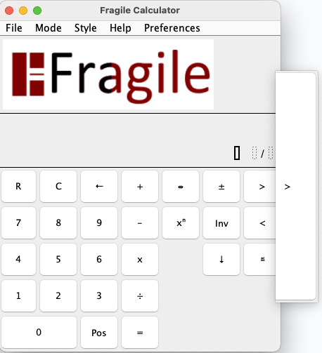
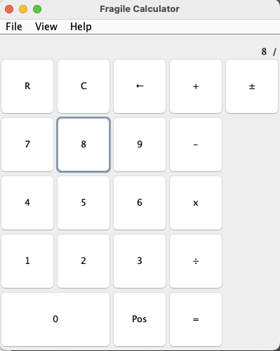
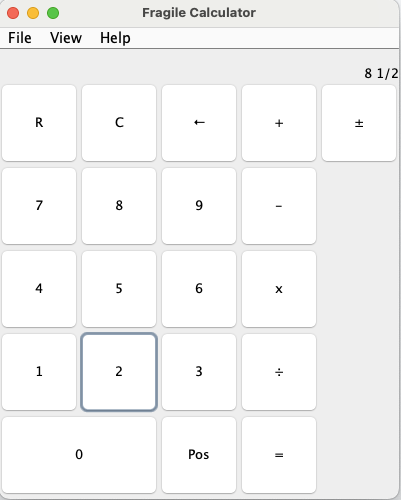
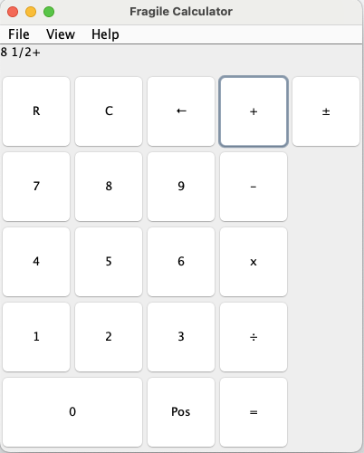
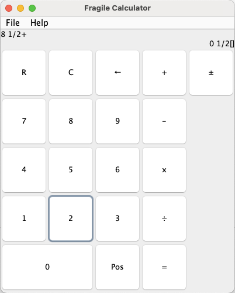
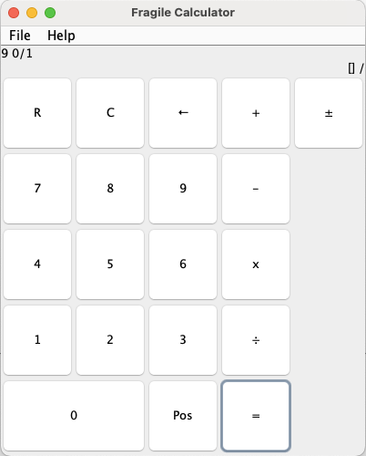
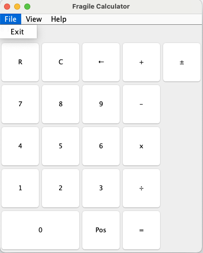
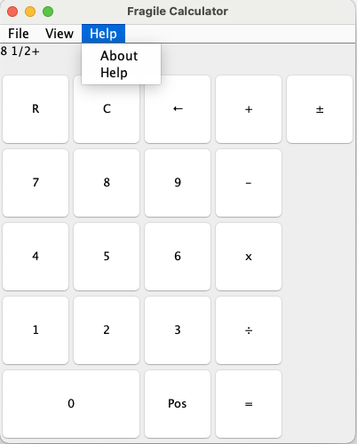

Ayuda con frágiles
Esta es la página de ayuda para Fragile.
Comprender la interfaz

Así es como se ve la calculadora en su estado inicial.
Para
iniciar un cálculo, haga clic en el número (entero) para empezar.
Para los botones no numéricos, estos son los usos:
- Al hacer clic en el botón Borrar [C] se elimina la fracción mixta actual.
- Al hacer clic en el botón Restablecer [R] se elimina toda la expresión actual.
- Al hacer clic en el botón Retroceso [←] se elimina el dígito ingresado más recientemente de la fracción mixta actual.
- Al hacer clic en el botón Firmar (arriba a la derecha) se cambia el signo de la fracción mixta actual.
- Al hacer clic en el botón Posición [Pos] se mueve el cursor dentro de la fracción, comenzando con el numerador.
Después de ingresar un número

Aquí, el usuario ha ingresado un 8 en la posición del número entero.
Para ingresar el numerador de la fracción, simplemente presione el botón de posición, seguido de su número.
Después de ingresar el numerador, presione el botón de posición nuevamente para enfocarse en el denominador.
Después de ingresar una fracción

En la imagen de la izquierda, el usuario ingresó 8 y 1/2 para el operando izquierdo.
Después de ingresar esto, el usuario debe presionar su operador.
Esto se muestra en la imagen de la derecha, donde el operando izquierdo y el operador se mueven a la pantalla.

Resolviendo el problema

En la imagen de la izquierda, puede ver que el usuario ingresó 8 1/2 como operando izquierdo,
un signo de suma
como operador y 1/2 como operando derecho.
Luego de presionar el signo igual, el usuario verá la imagen de la derecha, con la respuesta ubicada
en la parte superior derecha de la pantalla.
Además, si desea utilizar la solución actual como siguiente operando izquierdo, simplemente haga clic en
un operador e ingrese el nuevo operando derecho.

Saliendo

Para salir de la calculadora, seleccione el menú Archivo y "Salir", o seleccione el botón de cierre predeterminado para su sistema operativo.
Ayuda y acerca del software

Para acceder al menú de ayuda o conocer el software, seleccione el menú "Ayuda" y
seleccione "Ayuda" o "Acerca de".